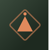

Body Scan (Solo)
Awareness, no touch
How to
Lie down comfortably and bring slow attention to each part of the body in turn, without touching or judging what you notice.
Benefits
- Builds the interoceptive awareness Sensate Focus techniques rely on
- Reduces performance-anxiety patterns by shifting attention to sensation, not outcome
- A useful practice on its own, with or without a partner
Practice
If your mind drifts to evaluating rather than noticing, gently bring it back to plain sensation.

Get the Bandha appFree, no ads, works offline
Google Play
General information, not medical advice. If you have a health condition or pain, talk to a doctor or qualified teacher first.